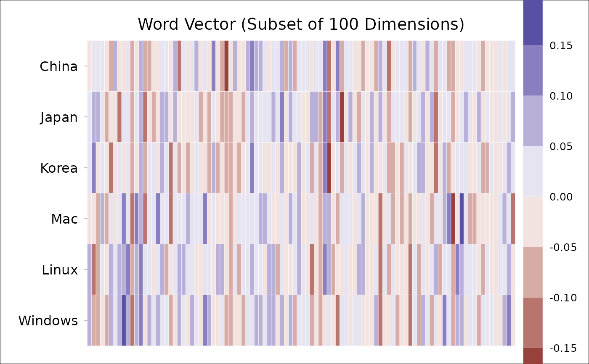

Extract word vectors of multiple words,
using either wordlist (a vector of words; using words)
or regular expression (a pattern of words; using pattern).
If both (words and pattern) are specified, words wins.
Usage
get_wordvecs(
data,
words = NULL,
pattern = NULL,
plot = FALSE,
plot.dims = NULL,
plot.step = 0.05,
plot.border = "white"
)Arguments
- data
Data table (
data.table) with variableswordandvec.See
data_transformfor details about data format.- words
[Option 1] Word string (
NULL; a single word; a vector of words).- pattern
[Option 2] Pattern of regular expression (see
str_subset).- plot
Generate a plot to illustrate the word vectors? Default is
FALSE.- plot.dims
Dimensions to be plotted (e.g.,
1:100). Default isNULL(plot all dimensions).- plot.step
Step for value breaks. Default is
0.05.- plot.border
Color of tile border. Default is
"white". To remove the border color, setplot.border=NA.
Examples
d = data_wordvec_normalize(demodata)
#> √ All word vectors have now been normalized.
get_wordvecs(d, c("China", "Japan", "Korea"))
#> China Japan Korea
#> 1: -0.02697318 0.018329469 0.033778005
#> 2: 0.04999036 0.090237829 0.133294179
#> 3: 0.04010034 0.060275982 -0.021963288
#> 4: 0.03056975 0.030490640 0.001675763
#> 5: -0.04711339 -0.095877693 -0.014011015
#> ---
#> 296: -0.01393625 -0.087418077 -0.072705831
#> 297: -0.06761304 -0.105042608 -0.115117643
#> 298: 0.05070960 0.048291315 0.015374394
#> 299: 0.03452576 0.002103985 -0.043017655
#> 300: -0.02931099 0.008636121 0.077552886
get_wordvecs(d, cc(" China, Japan; Korea "))
#> China Japan Korea
#> 1: -0.02697318 0.018329469 0.033778005
#> 2: 0.04999036 0.090237829 0.133294179
#> 3: 0.04010034 0.060275982 -0.021963288
#> 4: 0.03056975 0.030490640 0.001675763
#> 5: -0.04711339 -0.095877693 -0.014011015
#> ---
#> 296: -0.01393625 -0.087418077 -0.072705831
#> 297: -0.06761304 -0.105042608 -0.115117643
#> 298: 0.05070960 0.048291315 0.015374394
#> 299: 0.03452576 0.002103985 -0.043017655
#> 300: -0.02931099 0.008636121 0.077552886
## specify `pattern`:
dt = get_wordvecs(d, pattern="Chin[ae]|Japan|Korea")
#> 6 words are matched...
## a more complex example:
words = cc("
China
Chinese
Japan
Japanese
good
bad
great
terrible
morning
evening
king
queen
man
woman
he
she
cat
dog
")
dt = get_wordvecs(
d, words,
plot=TRUE,
plot.dims=1:100,
plot.step=0.06)

if (FALSE) {
# if you want to change something:
attr(dt, "ggplot") +
scale_fill_viridis_b(n.breaks=10, show.limits=TRUE) +
theme(legend.key.height=unit(0.1, "npc"))
# or to save the plot:
ggsave(attr(dt, "ggplot"),
filename="wordvecs.png",
width=8, height=5, dpi=500)
}